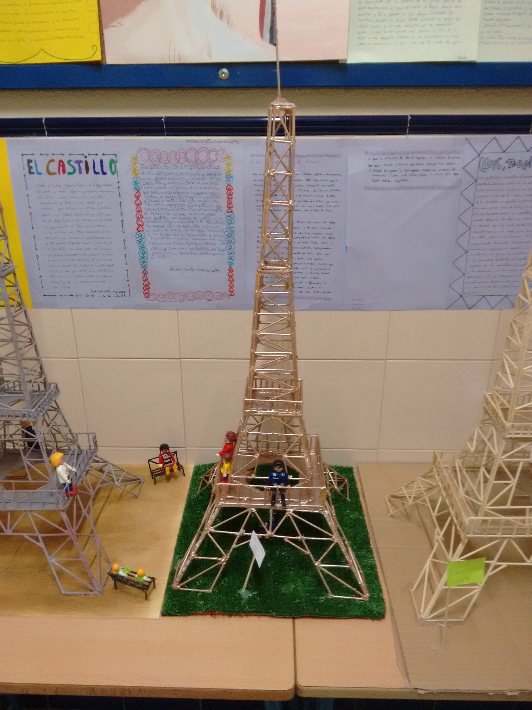

ESTRUCTURAS
PROYECTO PUENTE CON CANUTOS DE PAPEL.
Relacionado con el tema de estructura de la materia tenemos este proyecto que consiste en crear un pequeño puente utilizando como elementos folios enrollados en forma de canutos y unidos mediante cola o pequeños trozos de cinta adhesiva, como acabado del puente se puede pintar de diferentes colores. El carril de circulación será elaborado con una cartulina o trozo de cartón que ha de ser también pintado o envuelto.
PROYECTO CATAPULTA
Este proyecto se fundamenta la construcción en madera de una catapulta a pequeña escala.
Planos catapulta
Torre Eiffel y Museo del Louvre para hacer con barras de brochetas y tablero de marquetería.

Planos en pdf de ambos proyectos
PUENTE
Este proyecto consiste en construir un puente con madera y otros materiales como cartón, barras de brochetas,etc, El proyecto va a ser medio guiado con los planos de una estructura base y el resto ha de ser diseñado y construido por los alumnos, se va a proponer que el puente soporte un determinado peso.